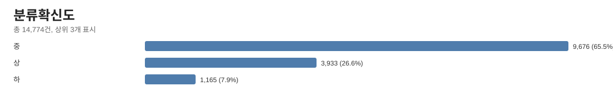
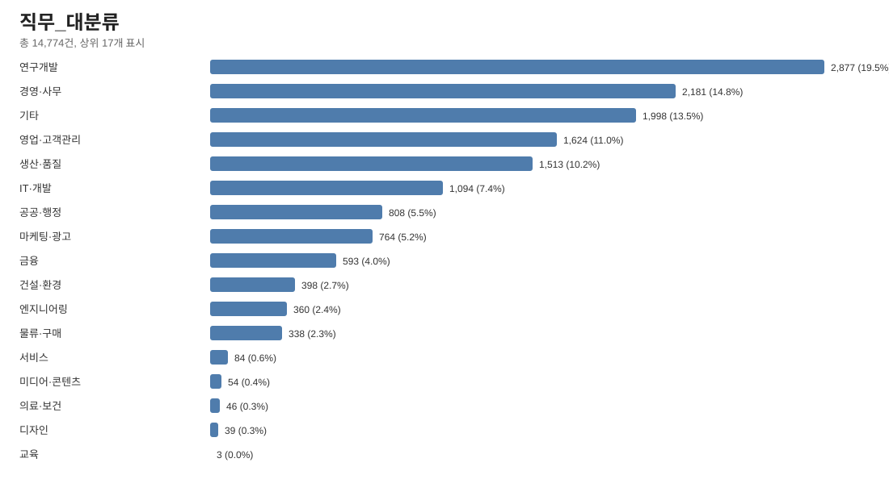
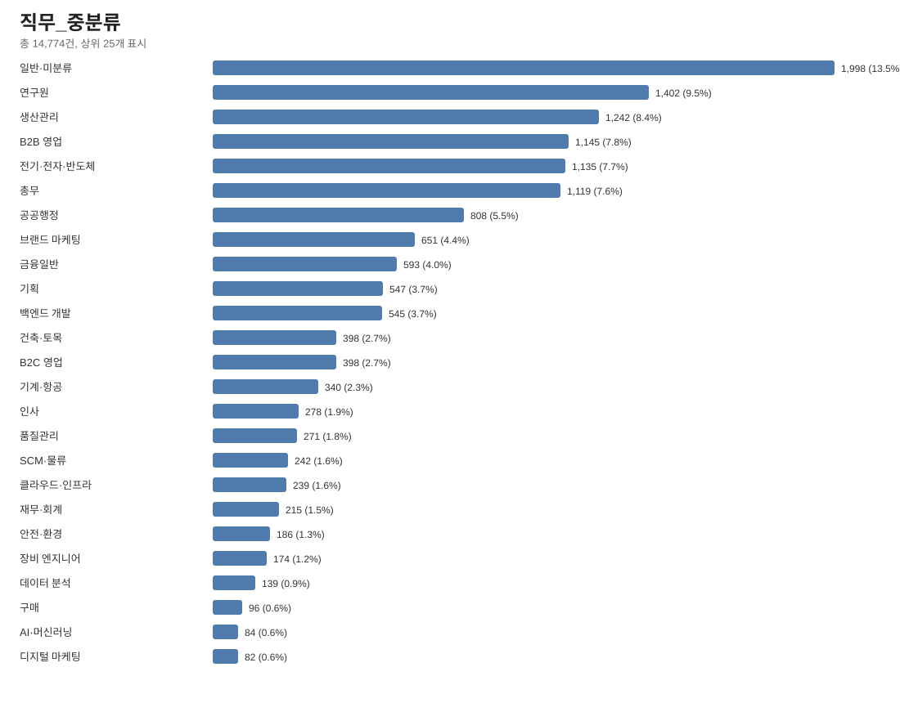
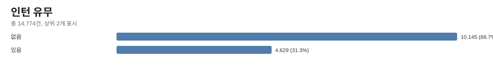
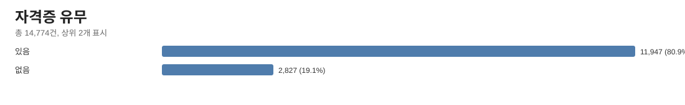
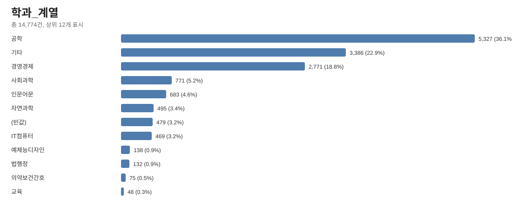
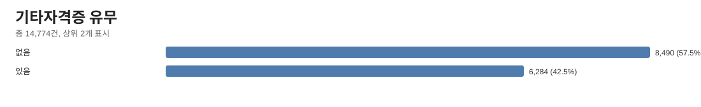
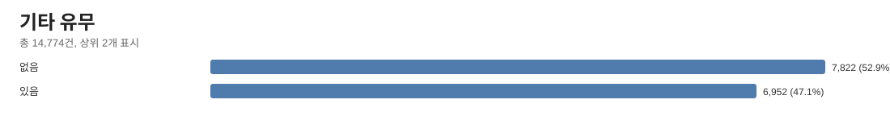
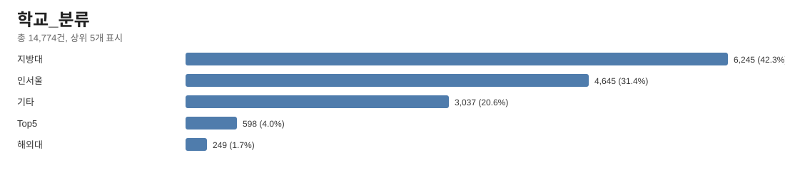

Category Visualizations
CSV 열별 분포를 SVG 막대차트로 정리했습니다.
job confidence

job large category

job medium category

spec intern presence

spec language certificate presence

spec major group

spec other certificate presence

spec other presence

spec school category
